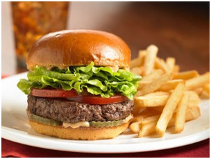
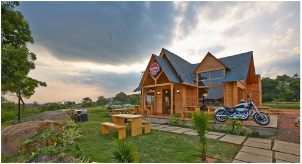

1.truffels

Phone number
080 49652818
Cuisines
American, Burger, Cafe
Cost
AVERAGE= 800 for two people (approx.)
VAT extra
Cash and Cards accepted
Opening hours
Mon 12 Noon to 10:30 PM
Tue 12 Noon to 10:30 PM
Wed 12 Noon to 10:30 PM
Thu 12 Noon to 10:30 PM
Fri 12 Noon to 10:30 PM
Sat 12 Noon to 10:30 PM
Sun 12 Noon to 10:30 PM
Address
28, 4th 'B' Cross, Koramangala 5th Block, Bangalore
See 4 more locations ›
Highlights
Home Delivery
Table booking not available
Featured in Collections
Kickass burgers
Great cafes
Sweet tooth
Known For
Their wide variety of burgers
2.Onesta
Phone number
080 49653087
Table booking recommended
Cuisines
Pizza, Cafe, Italian
Cost
AVERAGE
600 for two people (approx.)
Cash and Cards accepted
Opening hours
Mon 12:30 PM to 11 PM
Tue 12:30 PM to 11 PM
Wed 12:30 PM to 11 PM
Thu 12:30 PM to 11 PM
Fri 12:30 PM to 11 PM
Sat 12:30 PM to 11 PM
Sun 12:30 PM to 11 PM
Address
501, Binnamangala Extension, 1st stage, C.M.H Road, Indiranagar, Bangalore
Highlights
Valet Parking Available
Unlimited pizzas and desserts
Rooftop
Featured in Collection
European and Mediterranean
3.Indian Paratha

Phone Numbers
+91 9886699409
+91 9902009977
Cuisines
North Indian, Cafe
Cost
AVERAGE
500 for two people (approx.)
Cash and Debit Cards accepted
Wallet accepted
Opening hours
Mon 7 AM to 11 PM
Tue 7 AM to 11 PM
Wed 7 AM to 11 PM
Thu 7 AM to 11 PM
Fri 7 AM to 11 PM
Sat 7 AM to 11 PM
Sun 7 AM to 11 PM
Address
1/2, Guttahalli, Kasaba Hobli, Devanahalli, International Airport, Bangalore
-
Highlights
- Breakfast Home Delivery
- Wheelchair Accessible
- Vegetarian Only
- Veggie friendly